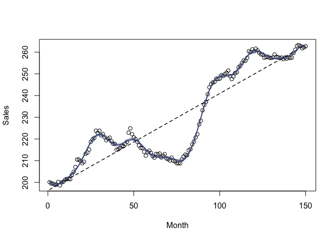

bases provides various basis expansions for flexible regression modeling, including random Fourier features, exact kernel / Gaussian process feature maps, BART prior features, and a helpful interface for n-way interactions. The provided functions may be used within any modeling formula, allowing the use of kernel methods and other basis expansions in modeling functions that do not otherwise support them. Along with the basis expansions, a number of kernel functions are also provided, which support kernel arithmetic to form new kernels. Basic ridge regression functionality is included as well.
Installation
You can install the development version of bases with:
remotes::install_github("CoryMcCartan/bases")Example: random Fourier features
The basis functions in bases all start with b_ and are designed to work in the same way as built-in basis expansions like splines::bs or poly: simply include the function in a model formula.
So fitting an approximate kernel regression with random Fourier features is as simple as wrapping the relevant variables in a call to the corresponding basis function, b_rff(). The default kernel is a Gaussian/RBF kernel with length scale 1 which is applied to predictors after rescaling them to have unit variance.
library(bases)
# Box & Jenkins (1976) sales data
x = 1:150
y = c(BJsales)
lm(y ~ b_rff(x, p = 5)) # 5 random features
#>
#> Call:
#> lm(formula = y ~ b_rff(x, p = 5))
#>
#> Coefficients:
#> (Intercept) b_rff(x, p = 5)1 b_rff(x, p = 5)2 b_rff(x, p = 5)3
#> 70200.9 298.4 1463.6 -1334.8
#> b_rff(x, p = 5)4 b_rff(x, p = 5)5
#> 1619.9 -70278.6You can provide a different kernel = argument to switch kernels. Many common kernels are provided with the package; see ?kernels.
In practice, RFF are usually fit with penalization, such as via ridge regression. Below, we visualize several RFF ridge regression fits versus a simple linear model, using the ridge() function provided in the package.
k = k_rbf(scale = 0.2)
plot(x, y, xlab = "Month", ylab = "Sales")
lines(x, fitted(lm(y ~ x)), lty = "dashed", lwd = 1.5)
for (i in 1:20) {
m_rff = ridge(y ~ b_rff(x, kernel = k))
lines(x, fitted(m_rff), col = "#4584")
}